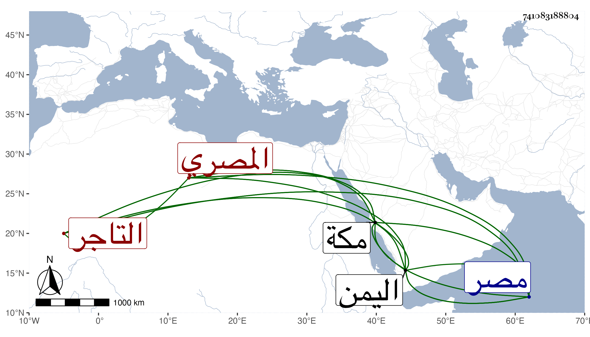

0902Sakhawi.DawLamic.ITO20230111-ara1.EIS1600.741083188804
Biography ID: 741083188804
أحمد بن إبراهيم بن عمر بن علي الشهاب أبو الفضل بن البرهان المصري ويعرف بابن المحلى التاجر الماضي أبوه قال شيخنا كان شابا حسنا كريم الشمائل خفيف الروح وقال في أبيه منه أنه بلغ الغاية في المعرفة بأمور التجارة ودخل اليمن وكان بها حين وفاة أبيه بمصر . مات بعد أبيه بيسير بمكة في أواخر ذي القعدة سنة ست . وذكره التقي الفاسي في تاريخ مكة فقال : كان وافر الملاة إلى الغاية خبيرا بالتجارة وفيه انفعال للخير وكان صاحبنا الحافظ شهاب الدين بن حجر يحضه عليه لمكانته عنده وجرت له على يده صدقات وكان يثني عليه بالعفة وهي عجيبة من مثله وكان مبتلي بعلة الصرع وبها مات في ليلة الأربعاء خامس عشري ذي القعدة عن ست وعشرين سنة بعد قدومه من اليمن باربعة أيام وكان طلب منه ليفوض له أمر المتجر السلطاني بمصر بعد موت أبيه فسبقت المنية .
